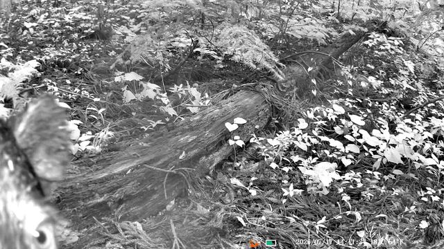
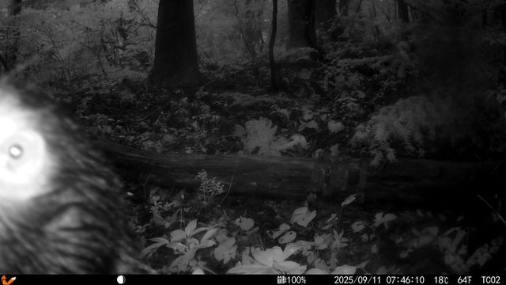
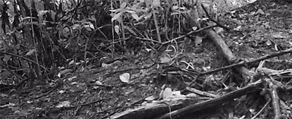

正解夜
正解ラベル ハクビシン (masked_palm_civet)
AIの判定 ハクビシン (masked_palm_civet) confidence 0.88
画面左下に細長い胴体と非常に長い尾を持つ中型哺乳類が1頭写っています。胴長短足の体型と、胴体と同等程度の長さを持つ尾の特徴からハクビシン（masked_palm_civet）と判定されます。
(c) WATANABE Hitoshi 渡辺仁, some rights reserved (CC BY)
2026-09-22 実施 / モデル: gemini-3.8-flash / 実行ID: gemini3-base
評価に使用した全 719 枚の画像をすべて掲載しています。正解ラベルをはじめ、AI が判定した種名、確信度（confidence）、判断根拠（notes）の出力テキストまで加工せずありのまま記録しています。正解の 579 枚だけでなく、誤認した 30 枚や判定不能（棄権）とした 70 枚も含め、すべての判定結果を確認できます。
各画像がどのようなパイプラインを経て判定されるかを示します。ステップ③の推論処理が、本ページに掲載している判定結果を生成する中核部分です。
画像が S3 に保存された時点でパイプラインが自動起動します。人手による前処理やアノテーション（1枚ずつ種名を付与する作業）は一切介在しません。これにより、「独自のアノテーションなしで実用的な精度が出るか」という本 PoC の主要仮説を検証しています。
推論時に実際に送信しているプロンプトです。昼用と夜用でプロンプトを切り替え、夜間は体色に依存した判断を行わないよう明記しています。種名を自由記述にせず、定義済みの候補リストから選択させることで出力形式を厳密に制御しています。
この画像に動物が写っているか判定し、record_detection ツールで結果を返してください。種は与えられた候補から最も近いものを1つ選び、判断できない場合は unknown を使ってください。動物は写っているが候補リストのどれでもない場合は other を使ってください。confidence には、その種であると判断した確からしさを正直に反映してください。
これは赤外線モノクロ画像です。毛色・斑紋・尾の輪模様など色に依存する特徴は判断に使えません。この画像に動物が写っているか判定し、record_detection ツールで結果を返してください。 使える手がかりは次の観察項目に限られます: 周囲の植生に対する体の大きさ、脚の長さと胴の比、尾の長さ・形、耳の形、吻の長さ、背線の形、アイシャインの間隔、個体数。 画像から実際に見えない特徴を見えたことにして記述しないでください。シルエットや輪郭だけでは種を絞り込めない場合は、推測せず unknown を選んでください。種は与えられた候補から最も近いものを1つ選び、候補にない動物が写っている場合は other を使ってください。confidence には、その種であると判断した確からしさを正直に反映してください。
record_detection ツールの引数定義モデルの出力は Function Calling（ツール呼び出し）によって構造化しています。自由記述ではなくスキーマで定義された項目を出力させるため、後続のシステムでそのまま機械処理できます。
| 引数 | 型 | 意味 | |
|---|---|---|---|
| animal_present | boolean | 動物の有無 | 必須 |
| category | string（5 個の候補から選択） | 動物の大分類 | 必須 |
| species | string（16 個の候補から選択） | 種名（定義済みの候補から選択） | 必須 |
| count | integer | 確認された頭数 | 必須 |
| confidence | number | 判定の確信度（0.0〜1.0） | 必須 |
| needs_escalation | boolean | 上位モデルへのエスカレーション要否 | 必須 |
| notes | string | 判定理由・観察所見（自由記述） | 任意 |
候補リストにない動物は other、判別が難しい場合は unknown を選択させます。「判別不能」を明示的に選べる設計にすることで、確証のない誤判定（ハルシネーション）を防止しています。本ページで「棄権」と表示されているカードは、モデルが unknown を出力した画像です。
条件に応じた絞り込みや並び替えが可能です。「誤認」のみを抽出して失敗傾向を分析したり、「夜」で赤外線撮影時の挙動を確認したりできます。初期表示では確信度が低い順に並んでいるため、モデルが判断に迷った画像を優先して確認できます。
枚を表示中
画面左下に細長い胴体と非常に長い尾を持つ中型哺乳類が1頭写っています。胴長短足の体型と、胴体と同等程度の長さを持つ尾の特徴からハクビシン（masked_palm_civet）と判定されます。

道路上にニホンジカ1頭、道路脇の右端に子ジカ1頭の計2頭が確認できます。

道路脇にニホンザルの親子（成獣1頭と幼獣1頭）が座っている。

イノシシ（幼獣）が地面を探索している様子が写っています。

草むらの中に動物が1頭確認できる。頭部から上方に直立する細長い2本の耳、光る眼（アイシャイン）、丸みを帯びた小型の胴体からノウサギ（hare）と判定。

濃霧（またはレンズの曇り）のため不鮮明ですが、中央にモコモコした体毛とずんぐりした体型、頭部に短い角のような突起を持つ大型哺乳類（ニホンカモシカと推測）が1頭写っています。

画像中央付近に光る眼（アイシャイン）と四肢・胴体のシルエットをもつ中〜大型の哺乳類が1頭写っているが、画像が非常に粗く不鮮明なため、耳や吻、尾などの詳細な特徴が確認できず種の特定には至らない。

全体に霧がかかっており、左奥に黒い切り株状の影が見られますが、動物と確認できる特徴は見当たらず、動物は写っていないと判断しました。

ニホンザル（幼獣・若齢個体含む）が3頭写っています。

手前にニホンザルが1頭明瞭に写っており、温泉の対岸・奥側にも丸まっている個体が2頭確認できます（地獄谷野猿公苑などの温泉に入るスノーモンキーと推測されます）。

アスファルト道路上に鳥類（ハト）が1羽確認できる。短い脚、流線型の胴体、くちばし、尾羽の特徴が明瞭。

木の根元付近にニホンカモシカが1頭確認されます。

胴長短足の体型、胴体に匹敵する非常に長い尾、額から鼻筋にかけて通る明瞭な白線などの特徴からハクビシン（masked_palm_civet）と判断。

前方に長く突き出た平たい鼻鏡を持つ吻、太くがっしりとした胴体、比較的短い脚、直立した耳などの形態的特徴からイノシシと判定。

くさび形の頭部、前方に長く突き出た吻部、がっしりとした胴体、胴に対して短く頑丈な脚、細く短い尾が観察でき、イノシシの特徴と一致します。

画像左下部にずんぐりした体型と短い脚を持つ中型哺乳類の胴体および四肢の一部が確認できますが、頭部や尾などの同定に必要な特徴がフレーム外または不明瞭なため、種を絞り込めずunknownと判定しました。

木の枝に鳥（ヒヨドリと思われる）が1羽とまっています。

砂利の上に座っているニホンジカ（sika_deer）が1頭、右上に別の個体の脚が写っています。

草むらにヌートリアが1頭写っています。白く目立つ口ひげや毛並み、特徴的な頭部形状がはっきりと確認できます。

藪の中に白い斑点模様を持つニホンジカの幼獣（子鹿）が1頭確認できます。

画像全体に動物の輪郭、四肢、頭部、アイシャインなどの明確な特徴は確認できず、植物と地表のみが写っています。

植物の葉と果実がクローズアップで写っており、動物は確認されません。

灰白色の長い毛に覆われ、短い角とずんぐりした体型からニホンカモシカと判断。

屋根の上で2頭のニホンザルが毛づくろい（グルーミング）を行っています。1頭は仰向けに寝転がり、もう1頭が毛の手入れをしています。

ニホンジカが複数頭（手前に1頭、奥に数頭）写っています。また、ハトも数羽確認できます。

ずんぐりとした胴体、太い首と頑丈な脚、頭部に短い角があり、尾が極めて短い特徴からニホンカモシカと判断。

レンズの曇りやモヤがあるものの、体型やシルエットからイノシシ（wild boar）と判断されます。

ニホンジカの子鹿1頭と、手前に別個体の体の一部が写っており、計2頭確認できます。

画面左下に中型哺乳類が1頭写っています。丸みを帯びた胴体、比較的細い四肢、毛量のある垂れ下がった尾、丸い耳などの特徴からタヌキ（raccoon_dog）と推定されます。

舗装道路上にニホンザル2頭（座っている個体と横たわっている個体）が確認できる。

手前および左奥にニホンジカ（sika_deer）が複数頭確認できます。角のある成獣が含まれています。

石灯籠（春日社）の前にニホンジカが1頭写っています。

ガードレールの上にニホンザルが1頭乗っています。

ずんぐりとした体型、短い四肢、太く中程度の長さの尾、小さく丸みのある耳が確認できる。尾の長さや体型のプロポーションからタヌキ（raccoon_dog）の可能性が高いが、赤外線画像によるブレのため確信度は中程度。

正面から歩いてくるイノシシ（成獣）が1頭写っています。

水辺にアオサギとみられる鳥類が1羽確認できます。

直立した長い耳、丸みを帯びた背線、発達した後肢などノウサギの特徴が明瞭に確認できる。

画面右下に小型の哺乳類が1頭確認できる。直立した長い耳、発達した後肢、丸まった背線、非常に短い尾、落ち葉に対する体サイズからノウサギ（hare）と判定。

ずんぐりとした体幹、短い四肢、先細る頭部（くさび型）、短い尾などの形態的特徴からアナグマと判定。

木道奥の地面に、前方に長く伸びた吻部、肩が高く後方へ傾斜する背線、がっしりとした体躯を持つイノシシ1頭が写っている。

大きく尖った立ち耳、尖った長い吻、細長い四肢、ふさふさした太い尾が確認できます。キタキツネ/ホンドキツネ（red_fox）の特徴に合致しています。

笹原の斜面にニホンジカが2頭（母子とみられる成獣と若齢個体）確認できます。

石段の上にニホンザルが1頭座っています。

奥に向かって歩き去るツキノワグマの後ろ姿が1頭写っています。

濡れたコンクリート面を歩くニホンザル1頭が明瞭に写っています。

カメラ至近距離に哺乳類の顔（眼周辺）が大きく写り込んでいますが、ピントが合っておらず体型や耳・吻などの識別可能な特徴が確認できないため種は特定できません。

寒さを凌ぐように身を寄せ合うニホンザル（抱えられている赤ちゃんを含め3頭）が確認できます。

画面左側に1頭の動物が写っています。尖った耳、前方に突き出た細長い吻部、細く長い四肢、太くふさふさした尾といった形態的特徴から、キツネ（red_fox）と判定されます。

画面右側にツキノワグマが1頭写っています。人身被害の恐れがある特定鳥獣のためエスカレーションが必要です。

柵の下の芝生にノウサギ（ニホンノウサギ）が1羽（頭）うずくまっている。

ニホンアナグマ（badger）が1頭写っています。

画面左側の小径を奥へ歩く中型哺乳類の後ろ姿が1頭写っている。丸みを帯びたずんぐりした体型と中程度の長さの尾が確認できるが、顔や耳などの特徴が写っておらず、シルエット・体型のみではアライグマやタヌキ等の種を確実に絞り込めないためunknownとした。

赤外線照射による白飛びが激しく、体の詳細な特徴や模様が確認できない。ずんぐりとした胴体と短い四肢を持つ小型〜中型の哺乳類が1頭確認できるが、種の特定は困難なためunknownとする。

画面中央下にずんぐりした胴体と短い脚を持つ中型哺乳類が1頭写っているが、赤外線照射による白飛びが激しく、耳の形や吻部の詳細が確認できないため種の特定は困難（unknown）。

大きく尖った立ち耳、尖った吻部、細く長い脚、ふさふさした太い尾が明瞭に確認できる。ホンドギツネ（red_fox）の特徴と一致。口元に何かをくわえているように見える。

登山道・歩道の奥に後ろ姿のニホンザルが1頭写っています。特徴的な赤いお尻が明瞭に確認できます。

芝生の上にアカギツネ（キツネ）が1頭確認できます。

画像の右下に丸みを帯びた中型哺乳類の胴体後部（臀部付近）のみが写っています。耳・吻・四肢などの特徴的な部位が画角外にあるため、種の特定は困難です。

画面左側に、丸く大きな耳、太く頑丈な前肢、がっしりとした肩部を持つ大型の哺乳類（ツキノワグマ）の前半部が写っている。

手前に座っているニホンザル1頭と、その奥を歩くニホンザル1頭の計2頭を確認。

水辺の岸辺に白鷺（サギ類の鳥）が1羽立っているのが確認できます。

画像には植物（花や葉）のみが写っており、動物は確認されません。

画像内に動物は確認されません。

中央奥の草むらの中に、立ち上がって頭部を上げている細長い体型の小型哺乳類（イタチ類と推測）が1頭確認できます。アイシャインと円筒形の体幹部が見られます。

スズメが地面に1羽写っています。

植物（ワレモコウ）の茎の間にアシナガグモ類のクモが写っています。

周囲の植生に対して体が非常に大きく、太く頑丈な四肢、丸みを帯びた耳と背線、極めて短い尾などの体型特徴からツキノワグマ（asian_black_bear）と判断。危険動物のためエスカレーションを要する。

後方から撮影された大型哺乳類。丸く目立つ耳、がっしりとした胴体、短い尾、蹠行性の特徴的な足裏が見られ、ツキノワグマと判断。危険動物のためエスカレーション対象。

画面左上に大型哺乳類の前半身（頭部、太い前脚2本、胴体の一部）が写っています。がっしりとした太い四肢と蹠行性の歩容、頭部の輪郭からツキノワグマ（asian_black_bear）と判断されます。危険動物のためエスカレーションを要します。

ずんぐりとした胴体に短い脚、小さく丸い耳、前に伸びた吻部が見られます。頭部から鼻筋にかけての顔面の明暗パターンや体型からニホンアナグマ（badger）と判断されます。

ツキノワグマの後ろ姿（丸い耳、黒い体毛）が1頭写っています。危険動物のためエスカレーション対象とします。

ずんぐりとした胴体、弓状の背線、前方に突き出た長い吻部、短く頑丈な脚など、イノシシの特徴が明瞭に確認できる。

雪景色と温泉の近くに座るニホンザルが手前に鮮明に1頭、背景にぼやけた個体が2頭確認できます。

ノウサギ（ニホンノウサギ）が道端に1頭確認できます。

地上で採餌する2頭のニホンジカ（sika_deer）が写っています。

長く直立した耳、丸みを帯びた背線、体型やサイズ感からノウサギ（hare）と判定。

イノシシ（wild boar）1頭が写っています。

草地に立つニホンジカ（メス）1頭を確認。

倒木の上を歩く中型哺乳類が1頭写っている。胴長短足の体型で、胴体の長さに匹敵する非常に長い尾を持ち、頭部は比較的小さく丸みのある耳が見られることからハクビシンと判断される。

斜面を登るイノシシ（wild boar）が1頭写っています。耳あたりに黄色の耳標（タグ）のようなものが確認できます。

縞模様のあるイノシシの幼獣（うり坊）が1頭写っています。

オレンジ色の切歯と長い丸尾が特徴的なヌートリアが1頭確認できます。

カメラに極めて近接したツキノワグマの頭部（右目、丸い耳、黒い毛並み）が写っています。

細長い後肢、楕円形の立ち耳、体格および短い尾の特徴からシカの後ろ姿と判断。

水辺の岩場の上にタヌキが1頭確認されます。

中央に胴長で長い尾を持つ中型哺乳類が1頭写っています。タヌキやアナグマに比べて尾が長く、ハクビシンの体型特徴と一致します。

植物（白い花と葉）のみが写っており、動物は確認されません。

中央に角のあるニホンジカが横たわっており、左側にもう1頭の体の一部が写っている。

画像左下に動物の後躯と尾が写っています。長く太くふさふさした尾と、細く比較的長い後肢の特徴からキツネ（red_fox）と判断されます。頭部・前肢は画面外にフレームアウトしています。

倒木の上にがっしりとした体躯の大型哺乳類が1頭確認できる。丸く目立つ耳、太い四肢、極めて短い尾、やや前方に突き出た吻部など、ツキノワグマの形態的特徴と一致する。危険動物のためエスカレーションを要する。

波打ち際にアオサギ（鳥類）が1羽確認できます。

雪の中、地面に座っているニホンザル（Macaca fuscata）1頭が確認できます。

画面右側にがっしりとした体格の四肢の太い大型哺乳類（クマ類）が写っている。尾は極めて短く、体型および足の形状からツキノワグマ（asian_black_bear）と判定。

被写体ブレ（モーションブラー）が激しく、四肢を持つ中〜大型哺乳類の後ろ姿または移動中の姿と見られるが、耳や吻、尾などの詳細な特徴が不鮮明なため種を特定できない。

画面右下の地上（木の根元付近）に中型哺乳類の後部（丸みのある胴体、短い後脚、尾）が写っています。頭部や耳、顔の形状が隠れて確認できず、シルエットのみではタヌキやアナグマ等の明確な種同定が困難なため、種はunknownと判定しました。また、画面中央奥の暗がりにもアイシャインと思われる光点が確認できますが、体躯が判別できないためカウントは確実な1頭としています。

浅い川の中に立つイノシシ1頭が明瞭に確認できます。

草木の間からこちらを向いているニホンジカが1頭確認されます。

ニホンザルの成獣が胸元に幼獣（赤ちゃん）を抱いている様子が確認できます。

画面左側に中型哺乳類の後ろ姿が確認できる。尾は円筒状で比較的長く、後肢の長さや丸みを帯びた背線の形状からアライグマの特徴が窺えるが、指示により尾の輪模様など色に依存する特徴が除外され、顔部（耳や吻）も見えないため、シルエットのみでは種を確定できずunknownとした。

画面下部に2頭の小型〜中型哺乳類が確認できます。1頭は中央左寄りに全身が見え、短足でずんぐりした胴体、前方に伸びた尖った吻、小さく丸い耳、短い尾が観察でき、アナグマの特徴と一致します。もう1頭は画面最下部中央に見切れて写っています。

水辺にかがんでいるニホンザルが1頭写っています。

ノウサギ（hare）が1頭確認されます。

夜間の赤外線撮影。がっしりとした体格、肩から背にかけての背線、前方に長く伸びる吻部、立ち上がった耳などからイノシシと判定。

左下に細身の体躯、比較的長い四肢、長く太いブラシ状の尾、尖った吻部を持つ個体が1頭写っており、キツネ（red_fox）と判定しました。

崖上・切り株の奥にニホンカモシカが1頭確認できる。

草むらの中を歩く中小型の哺乳類が確認できます。尖った耳や体型からイエネコ（猫）の可能性が高いと考えられますが、候補リストに該当種がないため other と判定しました。

丸みを帯びた背線、頭部から直立する長い耳、発達した後肢の特徴からノウサギ（hare）と同定。頭部にアイシャインが確認できる。

イノシシ（wild_boar）が1頭、歩いている様子が明確に写っています。

カメラ至近に哺乳類の胴体および脚の一部が写っているが、頭部、耳、尾などの識別特徴が画面外にあり、種を特定できない。

大きく尖った立ち耳、細長い吻部、すらりと長い脚、ふさふさした尾を持つキツネ（red_fox）が1頭確認される。口に獲物のようなものをくわえて歩行している。

上空を飛翔するトビ（猛禽類）が1羽確認できます。

尖った大きな耳、細く長い四肢、ふさふさとした太い尾などの形態的特徴からキツネ（red_fox）と判定。

胴体がずんぐりとして脚が極めて短く、吻部が前方に細長く尖っている。尾は短く、小さな丸い耳を持つ形態的特徴からアナグマと判定。

草むらを移動するイタチ1頭を確認。

画面右下にツキノワグマの頭部と背中が大きく写り込んでいます。危険動物（クマ）のため要警戒（escalation）とします。

小さく丸い耳、前方に直線的に伸びる吻部、低重心で太く短い四肢、短い尾、粗い体毛の特徴からアナグマと判定。

植物（イラクサ科などの花序）の接写画像であり、動物は確認されません。

跳躍中の個体。頭部に長い立ち耳が確認でき、後脚が長く跳躍姿勢をとっており、目立つ長い尾がないことからノウサギと判定。

手前右側にずんぐりとした丸みのある胴体と短い尾、丸い耳を持つ中型哺乳類が写っており、左奥の草むらにも同種と思われる別の個体の体の一部が確認できる。体型や短い尾、耳の形状からタヌキ（raccoon_dog）と判断される。

ニホンジカの成体1頭と子鹿2頭（1頭は手前右、もう1頭は成体の後ろ／左側）が確認できます。

草地の中にニホンジカが2頭確認できます（手前の個体の背後にもう1頭の頭部が見えています）。

手すりの上に座るニホンザルが1頭明瞭に写っています。

木の枝にとまるカラス（鳥類）が1羽確認できます。

建物のベランダの手すり部分にニホンザルが1頭確認されます。

ずんぐりとした丸みのある体型で、脚は短く、尾は太くふさふさとして比較的短い。耳は丸く、吻部は短く尖っている。2頭が並んで行動している特徴からタヌキ（raccoon_dog）と判定。

画像左側に前方に長く突き出た吻部、丸みを帯びた頑丈な胴体、盛り上がった肩部、尖った耳を持つ中〜大型のイノシシが1頭確認できる。

正面を向くタヌキが1頭確認できます。

地面を歩行する鳥類が1羽写っている。嘴、翼、2本の細い脚など鳥類の特徴が明瞭に確認できる。

中央にイノシシ1頭が写っています。

イノシシ1頭が林床を移動している様子が確認されます。

細長い胴体と、胴体の長さに匹敵する非常に長い尾が確認できます。四肢は比較的短く、吻部が尖っており、プロポーションからハクビシン（masked_palm_civet）と判定されます。

倒木の付近を歩くニホンアナグマが1頭確認できます。

丸みを帯びた頑丈で大きな体躯、太い四肢、短い尾、丸い耳、突出した吻部などの形態的特徴からツキノワグマ（asian_black_bear）と判定。

胴体に対して細長く伸びた脚や蹄、短い尾、体型および立ち耳の特徴からニホンジカと判定。

ヌートリアの頭部が鮮明に写っており、オレンジ色の切歯や白い口髭などの特徴が確認できます。

道路脇の草陰にスズメが1羽写っています。

ニホンジカ（sika_deer）の幼獣（小鹿）が1頭、明瞭に写っています。左下背景に別の個体の一部と思われる斑点模様が見られます。

ツキノワグマ（asian_black_bear）が1頭写っています。

ツユクサの花と葉のみが写っており、動物は確認されません。

コンクリートブロックの上に鳥類（スズメ大の小鳥）が1羽確認できる。嘴、翼、細い脚の形状から鳥類と判定。

ツキノワグマ（asian_black_bear）の外見が確認されます。体表の質感や足先の形状などから模型・置物（デコイ）の可能性も考えられますが、危険動物であるためエスカレーション対象として記録します。

水面を泳ぐヌートリアが確認できます。

木の根元で横たわるニホンジカの幼獣（子鹿）が1頭写っています。

水辺の草むら際にヌートリアが1頭写っています。手前の浅瀬には鳥類（カモ類）も1羽見られます。

動物は確認できません。植物（ツルボの花など）のみが写っています。

カメラの手前に黒い毛並みと丸い耳を持つツキノワグマが写っています。危険動物のためエスカレーションが必要です。

建物の通路（キャットウォーク）上にニホンザルが2頭確認できます。

屋根のある囲いの中に複数頭のニホンジカ（sika_deer）が写っています。

赤外線フラッシュによる白飛びと被写体ブレのため体表の模様や詳細な輪郭が不鮮明。四肢と尖った耳を持つ中型哺乳類であることは確認できるが、種の特定には至らないためunknownと判定。

中央奥の木々の間にニホンカモシカ（1頭）が写っています。

胴長短足の体型と、体幹に匹敵するほど長く伸びた尾が明瞭に確認できます。頭部は吻部がやや尖っており、ハクビシンの形態的特徴と一致します。

白い花（センニンソウなど）と植物の葉のみが写っており、動物は確認されません。

イノシシ1頭が地面を探索・採食している様子が確認されます。

草むらの中を歩くキツネ（アカギツネ）の後ろ姿が確認できる。毛替わりの時期のように見える。

胴長短足の体型で、胴体に匹敵する非常に長い尾を持つ。尖った吻部と額から鼻筋にかけた特徴的な白線が見られ、ハクビシン（masked_palm_civet）と判断。

温泉に浸かるニホンザルが手前に2頭、背景の湯気の中に少なくとも3頭確認できます。

ツキノワグマ（asian_black_bear）1頭が画面右下に明瞭に写っています。危険動物のため要報告。

手前に角のあるニホンジカ（成獣）が1頭横たわっており、背景の広場・園路にも3頭ほどのシカが確認できます（奈良公園などの環境）。

ニホンジカが2頭確認できる。夏毛の白い斑点が見られる。

画面下部に四足歩行の哺乳類のシルエットと片目のアイシャインが確認できるが、光の散乱や不鮮明さにより耳・尾・四肢の比率などの詳細が判別できず、種の特定には至らない。

雪の積もった林内にニホンザル2頭（手前と奥）が写っています。

木の枝（葉や花）を手にして座っているニホンザルが1頭写っています。

水辺（川）を移動するヌートリアが1頭写っています。口元の白いヒゲなどの特徴が明瞭に確認できます。

中央付近の斜面を移動するニホンザルが1頭確認できます。

画面左下に中型哺乳類が1頭確認できる。背中を丸めたアーチ状の背線、直立した耳、尖った吻部、太く均一な太さの円筒状で中程度の長さを持つ尾などの形態的特徴からアライグマと判定。

画面左側に大型の四肢および胴体の一部が写っている。太く密生した毛、肉球（足裏）の形状からツキノワグマと同定。人身被害の恐れがある大型野生動物のため要警戒（needs_escalation=true）。

画面左下にずんぐりとした体型で短い四肢と太い尾を持つ中型哺乳類が1頭写っています。白飛びにより詳細な形態特徴が不鮮明であり、タヌキやアナグマなどのシルエットに類似していますが種の確定には至りません。

画面下部手前に大型の哺乳類が写っている。丸みを帯びた耳の形状、肩の盛り上がり、ずんぐりとした体躯のシルエットからツキノワグマと推定される。

角を持つニホンジカ（オス）の頭部および上半身が鮮明に写っている。

ニホンザル（japanese_macaque）の幼獣が1頭、石の上に座っています。

中央右寄りに中型哺乳類が1頭写っています。頭部を藪に向けており、耳や吻、顔面は見えません。丸みを帯びた背線と、胴に対して太く長い円筒形の尾が確認できます。指示に従い尾の輪模様などの色彩・斑紋特徴を除外すると、シルエットおよび輪郭（尾の長さ・形状）のみからはアライグマなどの可能性がありますが種を確定できないため、unknownと判定しました。

カメラの至近距離に大型または中型の哺乳類の顔（右目と鼻先）が写り込んでいますが、特徴的な部位が限られており種（ツキノワグマ、ニホンカモシカ、ニホンジカ、イノシシ等）の特定が困難です。

中央下部に丸みを帯びた小型〜中型の哺乳類が1頭確認できる。丸い耳、幅広で丸い顔の輪郭、ずんぐりとした体型と短い四肢の特徴からタヌキ（raccoon_dog）と判断される。

画面左端に大型哺乳類の体の一部（臀部および脚部とみられる部位）が写っていますが、頭部や尾、耳などの同定形質が画面外にあるため種を絞り込めません。

イノシシ1頭が地面を探索しながら歩行している様子が確認されます。

水辺にヌートリアが1頭写っています。特徴的なオレンジ色の切歯や長い白いヒゲが明瞭に確認できます。

道路上にニホンザル3頭が確認されます。

ニホンジカの幼獣（仔鹿）が地面に頭を下げている姿が写っている。

木陰に座るニホンザル（Japanese macaque）が1頭確認されます。特徴的な赤い顔と灰褐色の毛並みが見られます。

川岸の草地にヌートリアが1頭写っています。

地面に佇むニホンザルが1頭鮮明に写っています。

ずんぐりとした大型の胴体、粗く硬い毛並み、短い尾、前傾した背線の特徴からイノシシと判定。

草むらの中に上を向いたニホンザル（Japanese macaque）が1頭写っています。

植物（ツルボ等の花）のみが写っており、動物は確認されません。

木の枝にニホンザルが1頭座っている様子が鮮明に写っている。

画像左側、樹木の根元付近の草むらに中型哺乳類が1頭確認できます。頭部を下に向けておりアイシャインが1つ反射しています。ずんぐりとした胴体が見られますが、尾や耳、吻の詳細が不鮮明なため種の特定は困難です。

夜間の赤外線照射により体表は白飛びしているが、胴に対して比較的長く細い脚、太くふさふさとした長い尾、前方に突き出た尖った吻部などのシルエットからキツネ（red_fox）と判定。

水面を泳ぐヌートリアが1頭写っています。

ツキノワグマが1頭写っています。危険動物のため要エスカレーションとしています。

首輪（調査用GPS/発信機とみられる機器）を装着したニホンザルが道路脇に1頭写っている。

観光客と触れ合っているニホンジカが少なくとも4頭確認できます。角のあるオス鹿と雌鹿が含まれています。

丸みを帯びた耳、ずんぐりした胴体と短い四肢、尖った吻、眼の周囲に見られる特徴的な模様などからタヌキ（raccoon_dog）と判断。

動物は確認されず、エノコログサ（植物）のみが写っています。

画像下部中央に中型哺乳類の胴体から尾にかけての一部が写っていますが、頭部（耳の形、吻の長さ）や四肢がフレーム外にあり確認できないため、種を特定できずunknownと判定しました。

水辺に前傾姿勢の中型哺乳類が1頭確認できます。耳介は比較的大きく直立しており、背線は弓なりに丸まり、吻部が細く尖っています。これらの形態的特徴はアライグマ（raccoon）に合致しますが、尾の形状が隠れて確認できないためタヌキ等の可能性も残ります。

水辺にヌートリア（1頭）が写っています。長い円筒状の尾や体毛の特徴からヌートリアと同定できます。

夏毛のニホンジカ（sika_deer）が1頭、地面の草を食べている様子が写っています。

中央手前に前方を向いた小型〜中型哺乳類が1頭確認できる。強いアイシャインが見られるが、白飛びやモヤにより胴体の輪郭が不鮮明で、脚や尾、吻の長さなどの形態的特徴を十分に捉えられないため種は判定不能。

長く伸びた頑丈な吻部、頭部上部の立ち耳、首から肩・背中にかけて高く盛り上がる体型など、イノシシに典型的な骨格・輪郭が明瞭に確認できます。

草地にヌートリア（Myocastor coypus）が1頭確認されます。特徴的な白い口元、丸い体型、粗い毛並みが見られます。

ずんぐりした体幹、地面に向かって伸びる長い吻、比較的短い脚、丸みを帯びた背線からイノシシと判断。アイシャインが1つ確認できる。

至近距離に大型の哺乳類が写っている。非常に太く頑丈な前脚、鋭い鉤爪、がっしりとした首、やや長めの吻部からツキノワグマと判断。

胴長短足の中型哺乳類。胴体と同等程度の非常に長い尾が尻から左下に向かって伸びており、丸みを帯びた耳と尖った吻部、弓なりに丸まった背線の特徴からハクビシンと判断される。

画像左端に大型の立ち耳と細長い吻部を持つ動物の頭部が写っている。耳の形状やマズルの特徴からキツネ（red_fox）と推定される。

ニホンザルが2頭確認できます。手前に1頭、奥に1頭立っています。

倒木沿いに3頭の個体が確認できる。非常に長い尾、細長い胴体と短い四肢、額から鼻筋にかけて走る特徴的な縦筋からハクビシン（masked_palm_civet）と判定。

木の枝にとまるムクドリ（鳥類）が1羽確認されます。

飛翔中の鳥（カワウなど）が1羽確認されます。

建物の縁にスズメ（鳥類）が1羽止まっています。

飛翔中のツバメ（鳥類）が1羽確認されます。

胴に対して脚が短く、ずんぐりとした体型。吻部が前方に尖り、耳が小さく目立たない。粗く長い体毛と中程度の長さの尾が観察され、アナグマの特徴と一致する。

木々の葉の間からニホンザルが1頭見えている。

倒木の向こう側に、ずんぐりとした丸みのある胴体、短い四肢と短い尾、前方に伸びた吻部、小さく丸い耳を持つ中型哺乳類（アナグマ）1頭が写っている。

手すりの上に座っているニホンザル（Japanese macaque）1頭が確認できます。

ニホンアナグマ（badger）が1頭写っています。ずんぐりした体型、短い尾、顔の帯状模様が特徴的です。

岩場と下草の広がる斜面にニホンザル（japanese_macaque）が1頭確認されます。

ずんぐりとした体型、丸みのある背線、短い四肢、太くふさふさとした短い尾、丸みを帯びた小さな耳、頬の毛の張り出しなどからタヌキ（raccoon_dog）と判定。

電柱付近のツタにつかまって跳んでいるニホンザル1頭を確認。

ガードレールの上にニホンザルが1頭乗っています。

画面左下に中型哺乳類の背面・後肢・尾が写っている。尾は太く長い円筒形で、タヌキやアナグマよりも明らかに尾が長い。腰高な体型と尾の長さ・形状からアライグマと判定される。

ずんぐりとした胴体、短い四肢、太くふさふさした中程度の長さの尾、丸みのある耳、適度に尖った短い吻部からタヌキ（raccoon_dog）と判断。

ヌートリア（Myocastor coypus）が1頭草むらの中に写っています。鼻先の白い毛や長いヒゲ、体毛の特徴がはっきりと確認できます。

画像中央付近の暗がりに中型の四足歩行動物と思われる影が確認できますが、全体的に非常に暗く解像度も低いため、耳や尾、頭部の詳細な形状を明確に判別できず種の特定には至りません。

正面を向いて歩いているイノシシが1頭明瞭に写っています。

草地に角のある雄を含むニホンジカ（シカ）の群れが7頭確認できる。

ガードレール沿いの道路上にニホンカモシカが1頭確認されます。

右側に丸い耳、太い四肢、がっしりとした大型の体躯を持つクマ科の動物が1頭確認できる。植生との対比や丸みを帯びた頭部・耳の形状からツキノワグマと判定。危険動物のためエスカレーションを要する。

夜間の赤外線画像に丸みを帯びた胴体と強いアイシャインを持つ中型の哺乳類が1頭写っています。頭部を下に向けており、脚の形状などから哺乳類であることは確認できますが、耳や尾、吻部の詳細な輪郭が不鮮明であり、特定の種まで絞り込むことが困難なためunknownと判定しました。

画像右下に小型〜中型の哺乳類らしき個体が写っていますが、明暗差が激しくブレており、耳や吻、尾などの形態的特徴が判別できないため種は不明（unknown）と判定しました。

画面左下至近距離に大型の立ち耳と目の一部が写り込んでおり、耳の形状と頭部・眼の位置関係からニホンジカと判断されます。

細長い四肢と蹄、高い体高、細身の体形、頭部の大きな耳とアイシャインからニホンジカ（sika_deer）と判定。画像中央に縦方向の光の反射（フレア）があり、臀部後方の地面付近には植物の蔓のようなものが写っている。

イノシシ（wild_boar）が1頭確認されます。地面を採餌しているような体勢です。

画面左下の茂みの中に中型哺乳類が1頭確認されます。直立した比較的明瞭な丸みのある耳、アーチ状に丸まった背線、太く長さのある尾の輪郭が見られます。尾の輪模様等の色彩的特徴は考慮せず、耳の形状や尾の長さ、背線の形状からアライグマと推定されます。

直立した細長い耳、発達した後肢、丸みを帯びた背線とコンパクトな体型からノウサギと判定。

画面左下に中型哺乳類が1頭確認できる。背中が丸くアーチ状になっており、尖った比較的大きな立ち耳、太く長い尾、中程度の長さの四肢といった形態的特徴からアライグマ（raccoon）と判断。

水辺の岩場にイタチと思われる個体が1頭確認できます。

画面下部中央から右寄りの地面に、ずんぐりとした低重心の胴体と短い四肢、短い尾を持つ中型哺乳類が1頭写っています。体型および尾の長さからニホンアナグマ（badger）と判断されます。

正面を向いた個体1頭が写っている。円盤状に平らな鼻（豚鼻）、立ち耳、頑丈な前脚など、イノシシの特徴が明瞭に確認できる。背後に伸びる曲線状のものは植物の蔓または根である。

ニホンザル（japanese_macaque）が1頭写っています。顔が赤く毛並みも明瞭に確認できます。

画面左側至近距離を大型動物が通過しており、太い脚部や胴体の一部と思われる黒い塊が大きく写り込んでいるが、近接によるボケと部分的なフレームインのため耳・吻・尾などの形態的特徴が判別できず種の同定は不可能。

大きな葉（フキなど）を口にくわえたニホンジカ1頭が確認できます。

画面下部にずんぐりとした体型の中型哺乳類が1頭写っている。脚は短く、耳は小さく丸みがある。尾は短めで毛に覆われている。タヌキ（raccoon_dog）の特徴とよく一致するが、アナグマの可能性も完全には排除できない。

カメラの至近距離を動物が通過したため激しい被写体ブレが発生しており、画面全体に毛に覆われた胴体や頭部付近のみが写っている。吻や耳、四肢、尾などの識別特徴を明瞭に捉えられないため、種の特定は困難（unknown）。

画面左側に動物の胴体および脚の一部が至近距離で写っている。毛並みと足先（指や爪）が確認できるが、頭部・尾・全体のシルエットが見えないため種を特定できずunknownと判定。

画面左下に中型の四肢動物が1頭写っている。ずんぐりとした胴体、短い尾、小さく目立たない耳、やや尖った吻部、低めの姿勢などの形態的特徴からニホンアナグマ（badger）と推定される。タヌキとの完全な識別は赤外線シルエットでは困難な面があるため確信度は中程度とする。

尾に明瞭なリング状の縞模様があり、顔のマスク模様と白い耳縁からアライグマと判定。

画像左下に尖った三角の耳と長い吻、細長い四肢を持つイヌ科動物が1頭写っています。体型と脚の長さの比率からキツネ（red_fox）と判定されます。口元に獲物のようなものをくわえています。

ドバト（カワラバト）が1羽確認できます。

タヌキ1頭がコンクリートのマンホール蓋の上に立っているのが明瞭に確認できます。

ずんぐりした体型で背線が丸くアーチ状に盛り上がり、胴に対して脚が非常に短い。吻部が前方に細長く伸び、耳は小さく丸い。尾は短い。これらの形態的特徴からニホンアナグマ（badger）と判断。

木の葉の間にメジロとみられる鳥が1羽確認できます。

木の上にニホンザルが1頭座っている。

雪の積もる茂みの中にニホンザルが2頭座っているのが確認されます。

至近距離にツキノワグマが写っており、胸部に特徴的な白い模様が確認できます。危険動物のため要報告。

画像全体がぼやけており、霧や水滴、レンズの曇り等による白く霞んだ領域が見えるのみで、動物の輪郭や特徴は確認できません。

タヌキ（幼獣または濡れた成獣）が舗装面上を歩いている姿が確認できる。

木々の茂みの奥に黒い毛に覆われた動物（ツキノワグマと推定される個体）の頭部・体の一部が確認できます。遮蔽物が多く判別が難しいため確認が必要です。

画面左側に大型哺乳類の前半身が写っている。太くがっしりとした前肢、丸い耳、突出した吻部などの特徴からツキノワグマと判断される。

雪の積もる斜面に座っているニホンジカ（冬毛）が1頭写っています。

画像内には植物（蕾や花）のみが写っており、動物は確認されません。

樽型の大型の胴体、前方に突き出た長い吻部、立ち耳、短く頑丈な脚などイノシシの特徴が明確に確認できる。

手前を横切るイノシシ（wild_boar）の頭部から背部が写っている。

成獣1頭と縞模様が確認できる幼獣（ウリ坊）5頭のイノシシの群れが写っている。ずんぐりした体幹、短い四肢、突出した吻部などの特徴からイノシシと同定。

近距離で撮影された個体。丸みを帯びた小型の耳、横に広がった豊かな頬毛、短い吻部、毛足の長いずんぐりした体躯などの形態的特徴からタヌキ（raccoon_dog）と判断。

画面中央下部にずんぐりした体型の哺乳類が1頭確認できる。背中が丸くアーチ状になっており、四肢は短めで、尾は短く太い。頭部は丸みがあり耳が立っており、タヌキの形態的特徴とよく合致する。

長く突き出た吻部、前方に尖る頭部形状、がっしりとした胴体と比較的短い脚部、背線の形状からイノシシ（wild_boar）と判断。1頭。

石灯籠の並ぶ参道付近でニホンジカ1頭を確認。

長い直立した耳、丸みを帯びた背中、発達した後肢の特徴からノウサギと判定。片方の目が強く反射（アイシャイン）している。

水面を泳ぐヌートリアが1頭写っています。口元の白い髭や体毛の特徴から判別できます。

画像中央付近の開けた草原に、角のあるシカ（ニホンジカ/エゾシカ）が1頭歩いているのが確認できます。

画面左手前にカメラ至近距離の動物の頭部と思われる一部（目と毛または羽毛状の質感）が写っているが、画面端で見切れており、耳や吻、体型、脚などの同定に必要な部位が確認できないため種および分類群の特定は困難。

胴長短足の体型で、胴体と同じくらい非常に長く伸びた尾が確認できる。尾の長さおよび体型からハクビシンと同定。

手前にニホンジカ1頭、背景の広場にさらに4頭のニホンジカが確認できます（奈良公園などの観光地とみられます）。

水辺にヌートリアが1頭写っています。特徴的な白い口ひげと粗い毛並みが確認できます。

ニホンザル1頭を確認。斜面・草地を四足歩行している様子。

舗装道路上にニホンジカが1頭立っている様子が確認できます。

カメラ至近距離を大型の動物が通過したとみられる黒い塊と強い赤外線反射が確認できますが、近接による白飛びと被写体ブレ・不鮮明さのため、耳・吻・尾・四肢などの形態的特徴が判別できず、種の特定は不可能です。

成獣1頭とウリ坊（幼獣）6頭の計7頭のイノシシが確認できます。

水面を泳ぐヌートリアが1頭確認されます。

母鹿1頭、子鹿2頭（1頭は左端奥に体の一部）の計3頭のニホンジカが写っています。

タヌキが1頭確認されます。体の一部に脱毛が見られます。

ずんぐりとした大型の体躯、前方に長く伸びた特徴的な吻部、盛り上がった背線、比較的短い四肢などからイノシシ（wild_boar）と判定。1頭が写っている。

毛づくろい（グルーミング）を行っている2頭のニホンザルが写っています。

木の枝の上にニホンザル（1頭）が座っているのが確認できます。

画像中央付近に光る眼（アイシャイン）と小型〜中型哺乳類の胴体のシルエットが確認できるが、距離があり不鮮明なため種の特定は困難。

大きく尖った三角形の立ち耳、すらりとした細めの脚、太くふさふさした尾が確認でき、キツネ（red_fox）の特徴と一致する。

電線の上に座っているニホンザル（1頭）が確認できます。

オオバコ等の植物が写っており、動物は確認されません。

植物（キク科植物の蕾・花）のみが写っており、動物は確認されません。

画面右下に中型哺乳類が1頭写っている。胴長短足の体型で、尾が胴体に匹敵するほど非常に長く細長い。耳は丸く、吻部はやや尖っている。これらの形態的特徴からハクビシン（masked_palm_civet）と判断される。

手前に角のあるニホンジカが1頭、背景の草地に少なくとも2頭のニホンジカが写っています。

画面下部中央に中型の哺乳類が1頭写っている。頭部が茂みや影に隠れており耳の形や吻の長さが確認できず、シルエットや輪郭のみでは種を絞り込めないためunknownと判定。

画像の右側に中型〜大型哺乳類の胴体または臀部の一部が写っているが、頭部、耳、尾、脚などの識別特徴が写っておらず種を特定できない。

被写体ブレがあるものの、特徴的なずんぐりした体型、剛毛、鼻先や尾の形状からイノシシと判定。

草地と砂泥地の境界付近に3頭のキツネが確認できます。

画面下部に体高が低くずんぐりとした胴体、短い尾、くさび形で細長く突出した吻部を持つ中型哺乳類が1頭確認できる。胴長短足の体型および吻部の形状からアナグマと判断した。

木の枝にとまっているムクドリが1羽確認できます。

成獣1頭と右側に縞模様のある幼獣（ウリ坊）1頭の計2頭のイノシシが確認できます。

がっしりとしたずんぐりした体型、太い首、短い尾、頑丈な四肢などの形態的特徴からニホンカモシカと判断。頭部は動いておりややブレている。

画像には植物（ミゾソバの花）のみが写っており、動物は確認されません。

植物（ヘクソカズラ）のみが写っており、動物は検出されませんでした。

円盤状の鼻盤を持つ長い吻部、立ち耳、がっしりとした体躯と肩部の盛り上がりなどからイノシシ（wild_boar）と判断。

川沿いの岸辺にニホンザルが2頭（1頭は四肢歩行中、もう1頭は座っている）確認できます。

イソシギとみられる鳥類が1羽写っています。

杭（柵の支柱）の上にニホンザルが1頭座っているのが明瞭に確認できる。

画像右側に中型の哺乳類と思われる個体が写っているが、ノイズが多く耳や尾の詳細、吻部の明瞭な特徴が捉えられないため種は特定できない。

ニホンカモシカ1頭がカメラ目線で確認できる。

大型で頑丈な胴体、太くたくましい四肢、丸みを帯びた頭部と丸い耳、突出した吻部、目立たない極めて短い尾などの形態的特徴からツキノワグマと判断。危険動物のためエスカレーションを要する。

ニホンザルが斜面に座っている様子が鮮明に写っています。

アルミ缶（飲料缶）を口に咥えたキツネ（アカギツネ）が1頭写っています。

画面右側の草むらの中に、丸みを帯びた立ち耳とずんぐりした体型の中型哺乳類が1頭確認できる。頭部と背部の輪郭が見られるが、下半身や尾は草に遮られている。タヌキの形態的特徴とよく合致する。

雪の残る斜面の倒木・枝の上にニホンザルが1頭座っている様子が写っています。

細長く突出したマズル（吻）と、ピンと立った三角形の耳、細い前脚が確認できます。これらの形態的特徴からキツネ（red_fox）と判定されます。

画像の左下に黒色で毛深い大型動物の胴体・脚部の一部が写っており、ツキノワグマと推定されます。

大きく尖った直立した耳、尖った吻部、胴体に対して細く長い脚、ふさふさとした太い尾が明瞭に確認でき、キツネの特徴と一致します。

カラスが1羽写っています。

ニホンザルの成獣が背中に幼獣（子ザル）を乗せて歩いています。計2頭。

画像左下に後方を向けた中型哺乳類が1頭確認される。背線は丸みを帯びて後肢側が高く、尾は円筒形で太く中程度の長さがあり、タヌキやアナグマに比べて明らかに尾が長い。尾の形状とプロポーション、四肢および胴体の比率からアライグマと判定。

木の枝に座っているニホンザルが1頭確認できます。

ニホンジカ（sika_deer）の幼獣が1頭確認されます。背中に特徴的な白い斑点模様（鹿の子模様）が見られます。

2頭のニホンジカ（角のあるオス1頭と別の個体1頭）が写っています。

雪原の枯れ草の中にうずくまるニホンジカが1頭確認されます。

ツキノワグマの後ろ姿とみられる大型哺乳類が1頭写っています。安全管理・警戒の観点からエスカレーションを要します。

画像左側に強く光る一対のアイシャインが確認できますが、体躯の輪郭や形態的特徴が写っておらず、種を特定することは不可能です。

ニホンザルが1頭、手すりの上に座り植物の葉を口元に運んでいる様子がはっきりと確認できます。

丸みを帯びた頑丈な胴体、前方に突き出た長い吻、尖った立ち耳、短い四肢、細く短い尾からイノシシ（wild_boar）と判断。

林の奥の木々の間にニホンカモシカとみられる個体が1頭確認できます。

ニホンアナグマ（Japanese badger）が1頭写っています。特徴的なずんぐりした体型、頑丈な四肢、黄褐色の粗い体毛が確認できます。

ニホンジカの子鹿（幼獣）が1頭写っています。

アスファルト上で寄り添うニホンザルの群れ（8頭）

白斑（かのこ模様）が見られるニホンジカ1頭が鮮明に写っています。

画面下部に中型哺乳類の胴体後部、後肢、および円筒形の尾が確認できる。頭部（耳の形や吻の長さ）が草地・地面側を向いており確認できず、シルエットや尾の形状のみでは種を確実に特定できないため unknown と判定。

画面中央やや左に奥へ向かって歩く中型哺乳類が1頭写っています。非常に太くふさふさした長い尾を持ち、胴に対して脚がすらりと長い体型から、キツネ（red_fox）と判定されます。

動物は写っていません。植物（ヘクソカズラの花など）のみが写っています。

画像下部中央に中型哺乳類が1頭写っています。白飛び（赤外線照射によるハレーション）があるものの、短い脚、ずんぐりとした胴体、太く中程度の長さの尾、丸みを帯びた頭部シルエットからタヌキ（raccoon_dog）の可能性が高いと判断されます。ただし照射過多により細部の特徴が一部不鮮明です。

植物（イタドリやイネ科植物）が生い茂っており、動物は確認されません。

画面左下に見切れで写る粗い剛毛と耳の形状からイノシシと推定されます。

首に追跡調査用の首輪（発信機カラー）を装着したニホンザルが1頭写っています。

温泉の縁の岩場に座っているニホンザル1頭が確認できます。

石灯籠の間に立つニホンジカ（sika_deer）1頭が確認されます。

角のあるオスのニホンジカ（鹿の子斑あり）が1頭写っています。

画面右側の地面を歩くハクビシン1頭が写っています。長い尾と顔の特徴から確認できます。

動物は確認できません。雑草（エノコログサ等）のみが写っています。

周囲のシダ類と比較して中小型の胴体が写っている。胴は太くずんぐりしており、四肢は短く、耳は小さく丸みを帯びている。頬の毛が横に張り出し、短めの尖った吻を持つ頭部形態からタヌキ（raccoon_dog）と判断される。尾は体勢のため明瞭には確認できない。

非常に暗く不鮮明ですが、眼の反射光および長い耳と丸みを帯びた体のシルエットからノウサギ（hare）の可能性があります。

シジュウカラが電線（ワイヤー）にとまっている。

がっしりとした大型の体格、太く力強い四肢、丸みのある耳、極めて短い尾などの形態的特徴からツキノワグマと判断。倒木の上に1頭確認できる。

がっしりとした太い四肢、丸みを帯びた大きな胴体、極めて短い尾、頭部上部にある丸い耳などの形態的特徴からツキノワグマ（asian_black_bear）と判定。

赤外線照射により体表が白飛びしているが、胴長短足でがっしりとした体格、肩から後方にかけて盛り上がるクサビ型の背線、短い尾などのシルエットからアナグマ（ニホンアナグマ）と推測される。顔の細部や耳の形状は不鮮明。

画面左下に中型哺乳類の後ろ姿が1頭写っています。頭部・顔・耳は前方を向いており確認できず、指示に従い尾の輪模様などの濃淡パターンを除外した場合、中型の体サイズや丸みを帯びた背中、ふさふさとした尾の輪郭のみではタヌキやアライグマ等を確実に識別できないため、種は unknown と判定しました。

画像下部中央付近に中型哺乳類が1頭確認できる。背線は後肢にかけて弓なりに盛り上がる腰高の体型をしており、後肢が比較的長い。尾はタヌキやアナグマに比べて長く、後肢の足首付近まで伸びる円筒状であることから、アライグマと判定した。

ツキノワグマ（アジアクロクマ）が1頭確認されました。危険動物のためエスカレーションが必要です。

ニホンジカ（sika deer）の後ろ姿が1頭確認できます。臀部の特徴的な白い斑紋が見られます。

長く前方に伸びた円錐形の吻、丸みを帯びた樽型の胴体、短い四肢、直立した耳の特徴を持つイノシシ2頭が確認できる。

ずんぐりとした胴体、非常に短い尾、太く短い四肢、先細りの吻部と小さな丸い耳が確認でき、ニホンアナグマの特徴と一致します。

中型の哺乳類が1頭写っています。胴体に対して長く太い尾、立ち上がった尖り気味の耳、尖った吻部、アーチ状に丸まった背線の形状からアライグマ（raccoon）と同定されます。

丸い耳、太く頑丈な四肢、短い尾、がっしりとした胴体および吻部の形状からツキノワグマ（asian_black_bear）と判定。

ずんぐりとした体型、胴に対して非常に短く太い脚、前方に向かって細長く伸びる吻部、丸みを帯びた背線、短い尾などの形態的特徴からニホンアナグマと判断。

胴長短足の体型で、胴体の長さに匹敵する非常に長い尾が特徴的な中型哺乳類が1頭確認できる。耳は小さく丸みがあり、尾の長さと形状からハクビシンと判定。

フェンスと壁の間の草むらに毛に覆われた中型哺乳類の背中または体の一部が見られますが、頭部や特徴的な部位が隠れており種の特定が困難です。

前方に長く突き出た吻部、丸みを帯びた背線、比較的短い四肢、細く垂れ下がらない尾の形状からイノシシ（wild_boar）と判断。

草むらの中にイノシシが2頭（中央右寄りに1頭、右端付近にもう1頭）確認されます。

立派な角を持つオスのニホンジカと、寄り添う個体の計2頭が確認できます。

柵沿いを歩くニホンザルが1頭確認できます。

画像全体に強いノイズがあり極めて不鮮明。左下付近に丸みのある塊状の影が見られるが、耳、吻、脚、尾などの解剖学的特徴が確認できず、動物であるかどうかも含めて種の特定は不可能。

草むらの中にタヌキが1頭確認されます。

電線の上に鳥（ホオジロ類）が1羽確認できます。

夏毛の白斑模様があるニホンジカが1頭鮮明に写っています。

雪の上にしゃがむ小型の哺乳類が1頭写っています。直立した長い耳と丸みを帯びた背線の形状、アイシャインが確認でき、ノウサギの特徴と合致します。

石段の上にニホンジカの若獣が1頭写っています。画像右側に赤色の光漏れ・フレアがあります。

丸い耳、突出した吻部、太く短い四肢、非常に短い尾を持つクマ科動物が3頭（成獣1頭と幼獣2頭とみられる）確認できる。ツキノワグマの親子。

画面下部に中型哺乳類が1頭写っています。胴体に対して尾が太く比較的長いこと、背線が腰にかけてアーチ状に盛り上がっていること、立ち耳であることなどの形態的特徴からアライグマと判定しました。色や尾の輪模様などの特徴は除外して判断しています。

電線にとまる鳥（ムクドリ等）が1羽確認できます。

護岸の上にカワウ（ウ類）とみられる鳥が3羽とまっています。

前方に長く突出した円錐形の吻、丸く盛り上がった背線、ずんぐりとした胴体と短めの四肢、細く垂れた短い尾からイノシシ（wild_boar）1頭と確認。

左下に小型の哺乳類が1頭確認できる。吻部が前方に尖り、後方に細長い尾が伸びている形態からネズミ類などの小型齧歯類と推測される。選択肢に該当種がないため other を指定。

中央にずんぐりとした体型で肩部が高く短い尾を持つ成獣のイノシシが1頭、その手前に小型の幼獣（うり坊）が1頭確認できる。画面上部奥にも別の個体のものと思われる四肢が一部写っている。

画面右下寄りにアイシャイン（眼の反射光）らしき輝点が1点確認でき、その周囲にうっすらと動物らしき影が見られますが、濃霧またはピント不良・低照度のため体の輪郭や四肢、耳などの特徴が判別できず、種の特定は不可能です。

倒木の奥にタヌキと思われる個体が1頭確認できる。肩から前肢にかけての黒色部やずんぐりした体型が特徴。

植物（草花）のみが写っており、動物は確認されません。

画面手前右側にクマ（ツキノワグマ）の頭部から肩部が近距離で写っている。頭部の左右に大きく立ち上がった丸い耳、太い吻部および鼻の形状が明瞭に確認できる。

前方に長く伸びた特徴的な吻部、頑丈でずんぐりした胴体、比較的短い四肢、肩部が高くなる背線の形状からイノシシ（wild_boar）と判断。

カメラ至近距離に被写体が存在し、強い赤外線フラッシュのハレーション（アイシャインと思われる光点を含む）と暗いシルエットが見られるものの、白飛びおよび霧・至近距離によるボケのため、耳や吻、体型などの形態的特徴が判別できず種は特定不能。

屋根の上に座っているニホンザル（口を大きく開けている）1頭を確認。

落ち葉の積もった地面を右方向へ歩く中型哺乳類が1頭写っています。ずんぐりとした丸みのある体型、胴に対して短い四肢、太くふさふさした短い尾、頬の毛の広がりなどの特徴からタヌキ（raccoon_dog）と判定されます。

水辺を泳ぐヌートリアが1頭写っています。

イノシシ1頭が林床を歩いているのが確認できる。

雪の中を歩くキツネ（アカギツネ）が1頭写っています。特徴的な赤褐色の毛並み、ふさふさとした尾、黒い脚部が明瞭に確認できます。

植物（ナス科の花）のみが写っており、動物は確認されません。

角のあるオスのニホンジカ（夏毛の鹿の子模様）が植物を食んでいる様子が鮮明に写っています。

画面左側に後方を向いて歩く個体が1頭写っている。尖った三角形の立ち耳、胴に対して細く長い四肢、太くふさふさとした長い尾といった形態的特徴からキツネ（red_fox）と判定。

倒木の近くを歩くイノシシ1頭が確認できます。

画像手前中央にツキノワグマ（クマ類）が1頭写っています。

歩道上で人に近寄るニホンジカ（夏毛の斑点模様あり）が1頭写っています。

ガードレールの下にニホンザルの成獣1頭と子ザル1頭の計2頭が確認されます。

暗闇の中央付近に眼の反射（アイシャイン）と、立ち上がった大きな耳のシルエットが確認できます。ニホンジカ（sika_deer）と推定されます。

動物は写っていません（植物のクローズアップ画像です）。

粗く長い体毛、短く後方に伸びる角、ずんぐりした体型、短い尾などからニホンカモシカと判断。

キジバト（Oriental turtle dove）が1羽写っています。

後方にわずかに湾曲する短い角、がっしりとした胴体と頑丈な四肢、首から肩にかけての長い毛並みなどの形態的特徴からニホンカモシカと識別。

コンクリート護岸の前にアオサギ（Grey Heron）が1羽確認できます。

雪の中でマウンティング（または交尾行動）をしている2頭のニホンザルが写っています。

木の根元の地面にニホンザルが1頭座っているのが明瞭に確認できます。

水辺の草地にニホンジカ2頭が写っています。

草地に角を持つニホンジカ（sika_deer）が2頭確認できる。

茂みの中にイノシシの成獣（胴体・背中のたてがみ）が確認できます。右側にもう1頭の個体の一部が写っている可能性があります。

立派な角を持つオスのニホンジカが1頭確認できます。

長く直立した耳、丸みを帯びた背線、発達した後肢などからノウサギ（hare）と同定。

極端な白飛び（露出オーバー）と強いピンボケにより、動物の形態（耳、目、吻、四肢等）が確認できません。被写体の判別が困難なためエスカレーション対象とします。

ニホンアナグマ1頭が写っています。

雪の残る林の奥に、角のある個体を含むニホンジカが少なくとも2頭確認できる。

胴長短足の体型で、胴体と同等に近い非常に長い尾を持つ哺乳類が1頭確認できる。尾の長さや体型のプロポーションからハクビシン（masked_palm_civet）と同定される。

水辺の小石原にヌートリアが1頭確認されます。

植物（キツネノマゴなど）のみが写っており、動物は確認されません。

ハト（ドバト/カワラバト）が1羽写っています。

画面中央左寄りに後姿の動物が1頭写っています。非常に太くふさふさとした長い尾、すらりと伸びた細い四肢、前方に尖った立ち耳が確認でき、キツネ（red_fox）の特徴と一致します。

電柱のボルトに留まるイソヒヨドリの雄と思われる鳥1羽を確認。

画面左下に、ずんぐりとした胴体、非常に短い脚、前方に円錐状に尖った吻部、小さく丸い耳を持つ中型哺乳類が1頭写っています。これらの形態的特徴からアナグマと判断されます。

画面左下に短足でずんぐりした体型の中型哺乳類1頭が確認できます。頭部を下げて地面を探るような姿勢をしており、アナグマやタヌキなどに似たシルエットですが、解像度が低くブレもあるため詳細な形態的特徴（耳や吻の細部など）が判別できず種の特定には至りません。上端付近にも動物の体の一部らしき影が見えますが判別困難です。

斜面の木の横に夏毛（白い斑点模様）で角を持つニホンジカが1頭確認できます。

舗装された地面の上にキツネ（アカギツネ）が1頭座っている様子が鮮明に写っています。

木の上に顔が赤いニホンザルが1頭座っているのが確認されます。

林床を歩行するニホンカモシカ1頭が確認できます。

画像には植物と地面のみが写っており、動物は確認されません。

画面左下に中型哺乳類が1頭確認できる。ずんぐりとした胴体に対して脚が非常に短く、吻部が前方に尖って長く伸びており、耳は小さく丸い。尾は短めで、背中から腰にかけてなだらかなアーチを描く体型からニホンアナグマ（badger）と判定。

ニホンザル（japanese_macaque）が2頭並んで座っており、右側の個体の胸元に抱かれている幼獣（赤ちゃん）の顔が確認できるため計3頭と判定。

画像下部に中型哺乳類が1頭写っている。丸みを帯びた背線、中程度の長さで円筒形にふさふさとした尾、やや尖った吻と立ち上がった耳、胴に対する脚の比率などの形態的特徴からアライグマ（raccoon）と判断される。

草地で草を食べているニホンジカ4頭（成獣および子鹿）を確認。

がっしりとしたずんぐりした体躯、比較的太い脚、短い尾、ピンと立った尖った耳、毛足の長い体毛などからニホンカモシカと判断。

倒木の上を歩くツキノワグマ1頭が鮮明に写っています。

木々の葉の間にスズメが2羽確認できます。

画像右側に頭部から胴体にかけて動物が写っている。頭部には細長く直立した2本の耳が確認でき、両目のアイシャインが強く反射している。これらの特徴からノウサギ（hare）と判定。

夜間の河川敷の草地・石畳付近にヌートリアが1頭確認されました。

檻の中に捕獲されたイノシシが1頭確認できる。

画像左下に中型の哺乳類が1頭確認できる。背中が丸く弓なりに盛り上がり、後肢がやや長いため腰高の姿勢をとっている。尾は太く円筒形で中程度の長さがあり、耳は直立し、吻部は尖っている。これらの形態的特徴（背線の形、尾の形状、耳の形、脚と胴の比率）からアライグマと判定。

至近距離のためブレているが、後方に湾曲する特徴的な短い角、尖った耳、灰褐色の体毛からニホンカモシカと判断。

ニホンカモシカが1頭写っています。特徴的な短い角と白みがかった毛並みが明瞭に確認できます。

川辺にニホンザルが3頭（手前に成体1頭、後方に2頭）確認できます。

フェンスの奥にイノシシが1頭確認されます。

尾に明瞭なリング状の縞模様が見られることから、アライグマ（raccoon）と同定。

胴長短足の体型で、胴体と同じくらい非常に長い尾を持つ中型哺乳類が1頭確認できる。耳は小さく丸みがあり、吻部がやや尖った形状からハクビシン（masked_palm_civet）と判定。

画面中央下の茂みの中にツキノワグマが1頭写っています。危険動物であるためエスカレーション対象とします。

ハマゴウ（植物）の群生が写っており、対象となる動物は写っていません。

木の枝にとまっている鳥類（フクロウ目、アオバズクとみられる個体）が1羽確認できる。

岩の上に座っているニホンザルが1頭写っています。

カメラのレンズ直前に動物の体の一部（毛並み）が大きく写り込んでいるが、近接しすぎており耳や顔、体型などの特徴が確認できず種を特定できない。

直立した非常に長い耳と丸みを帯びた胴体、前脚を地面につけて体を起こした姿勢からノウサギ（hare）と判定。

雪の上に座るニホンザルが1頭鮮明に写っています。

雪面を歩くニホンカモシカの後ろ姿が写っています。

藪の中にニホンジカが2頭確認されます。手前左側に1頭、右奥に1頭写っています。

画面下部に中型哺乳類が1頭写っているが、強い白飛びとブレにより耳の形状や吻の長さ、正確な体型の輪郭が不鮮明であり、指定の形態的手がかりのみでは種を絞り込めないためunknownとした。

画面左側に大型の哺乳類が1頭写っています。がっしりとした太い前肢、丸みを帯びた頭部と丸い耳、前に突出した吻部の形状からツキノワグマと判断されます。クマ類のため要エスカレーションとします。

カメラ至近距離に動物の頭部の一部（毛に覆われた丸みのある耳と目）が大きく写り込んでいるが、被写体ブレ・ピンボケおよび写っている範囲が限定的であるため、種の同定は困難です。

ニホンアナグマ（ずんぐりした体型、特徴的な顔の模様、黄褐色の毛）が1頭写っています。

ニホンジカの幼獣（子鹿）が地面に横たわっている。

雪の上にニホンザルの幼獣が1頭写っています。

空を飛翔するウ科と思われる鳥類が1羽確認できます。

雪のある温泉の縁で2頭のニホンザル（マウント/交尾行動）が確認されます。

木の根元付近にニホンノウサギが1頭確認できます。

道路脇をイタチが走っている様子が確認できます。

中央奥に長い直立した耳と丸い背線を持つノウサギが1頭確認できる。強いアイシャインが見られる。

ツバメ（Hirundo rustica）が1羽、建物の梁に止まっています。

手前に背中に子を乗せて歩くニホンザル、左上に座る1頭の計3頭が明確に確認できます（右上端にも別の個体の足先が写っています）。

カメラ直前の画面下部に、動物の背中または胴体と思われる丸みを帯びた大型の黒い毛の塊が写っています。しかし頭部、耳、四肢、尾などの特徴的な部位が画角外にあり確認できないため、種を特定することは困難です。

森林の中に黒い体毛と丸い耳を持つツキノワグマと見られる個体が1頭写っています。危険動物のため要警戒です。

画像の右下にツキノワグマ（アジアクロクマ）の頭部および前足が明瞭に写っています。

画面中央左側に、細長い四肢と太くふさふさした尾を持つ中型哺乳類（キツネの特徴に合致）が1頭写っています。

ニホンカモシカ（japanese_serow）が1頭写っています。ずんぐりした体型や毛色、短い角の特徴が確認できます。

雪の上にニホンザル（スノーモンキー）1頭を確認。

木の杭の上に座っているニホンザルが1頭写っています。

動物の胴体下部および細長い脚部が写っています。指先には爪が見られ食肉目（キツネなどのイヌ科）の特徴を示していますが、頭部や尾など種を特定できる部位がフレーム外のため種は不明（unknown）と判定しました。

ニホンアナグマ（badger）が1頭確認されます。

森林の中央奥にニホンジカ（sika_deer）が1頭確認できます。

植物（花）のみが写っており、動物は確認できません。

カメラに非常に接近したニホンカモシカの前肢と胴体・頭部の一部が写っている。青灰色と白が混ざった長毛と黒っぽい脚、偶蹄が確認できる。

画面中央から右側にかけて、ずんぐりとした樽型の体型をした中〜大型哺乳類が1頭写っている。左側に丸みのある臀部と細く垂れた尾、短い脚が確認でき、右側の頭部付近は植生に隠れているが葉の隙間にアイシャインが1点見える。背線の形状や尾、脚の比率からイノシシと判断される。

タヌキ（raccoon_dog）の頭部と体の一部が確認できる。

丸みを帯びたずんぐりした体型、胴に対して短い四肢、太く短い尾、小さく丸い耳、短めの吻部などの特徴からタヌキ（raccoon_dog）と判定。

ずんぐりとした胴体、短い四肢、丸みのある耳、やや尖った吻部からタヌキ（raccoon_dog）と判断。1頭確認できる。

画面右端の下部に動物の後躯（臀部と後肢）が写っている。細長い脚の形状や偶蹄類の特徴、滑らかな毛並みからシカとみられるが、頭部や前肢は画角外に切れている。

砂利道に立つキツネ（アカギツネ）が1頭写っています。

アスファルトの路肩で丸くなって眠っているキツネ（アカギツネ）が1頭確認されます。

大型でがっしりとした胴体と太い四肢、丸い耳、外部から目立たない極めて短い尾などの形態的特徴からツキノワグマ（asian_black_bear）と判定。人身被害の恐れがある特定危険動物のためエスカレーションが必要です。

胴が長く四肢が短めの中型哺乳類が1頭確認できる。尾は太く長く後方に伸びており、耳は丸く小さめ、吻部は適度に尖っている。これらの形態的特徴からハクビシン（masked_palm_civet）と判定。

木陰に座る角を持ったオスのニホンジカ1頭と、画面左端に頭部の一部が写り込んでいる個体1頭の計2頭が確認できます。

林内の地面を歩く2頭のイノシシ（wild boar）が確認できる。

胴長短足で、胴体の長さに匹敵する非常に長い尾を持つ中型哺乳類が1頭確認できる。尾の長さ、体型、頭部のプロポーションからハクビシンと判断される。

直立した長い耳、短い吻、丸みのある頭部からノウサギ（hare）と同定。草陰に1頭が確認できる。

ニホンアナグマ（Japanese badger）が1頭写っています。ずんぐりした体型と顔の模様が特徴的です。

水辺（浅瀬）にヌートリアが1頭写っています。

画面左下に、ずんぐりとした体型で短足、尾が短い中型哺乳類が1頭確認できる。耳は小さく丸く、吻部が尖っており、体型・尾の短さからアナグマと考えられる。

画面奥へと歩く中〜大型哺乳類の後ろ姿が写っている。ずんぐりとした胴体、がっしりした四肢、短い尾、密でふさふさとした長い体毛の特徴からニホンカモシカの可能性が高い。顔や角は明瞭に確認できないため確信度は中程度。

画像左下に中型哺乳類が1頭写っている。胴に対して脚が非常に短く低重心な体型で、頭部は吻部にかけて先細りになっており、耳は小さく丸い。尾は短めで太い。これらの形態的特徴からニホンアナグマ（badger）と判断される。

中央にニホンアナグマ（badger）と思われる個体が1頭写っています。ブレがありますが、ずんぐりした体型や頭部の模様の特徴が合致しています。

草原で草を食んでいるシカ（ニホンジカ）が1頭確認されます。

画面左上に奥へと歩く個体の後姿が写っています。頭部に丸く突き出た左右の耳、ずんぐりした体幹、太い後肢、目立たない尾などの形態的特徴からツキノワグマと判定しました。

画像右下に頭部を下げて採餌または探索行動をとる中型哺乳類が1頭写っています。ずんぐりとした胴体、比較的短い四肢、太くふさふさとして先がやや細くなる中程度の長さの尾などの輪郭的特徴からタヌキ（raccoon_dog）と推定されます。ただし、顔面の詳細な特徴は見えず遠景のため確度は中程度です。

歩道のガードレール・フェンス沿いに座っているニホンザルが1頭確認されます。

倒木の近くにタヌキ（raccoon_dog）が1頭写っています。目の周りの黒い模様や丸みのある体形、毛並みからタヌキと同定できます。

植物（イヌタデおよび草本）のみが写っており、動物は確認されません。

がっしりとした樽型の胴体、アーチ状の背線、胴に対して短い脚、前方に長く伸びる吻部、短い尾などからイノシシと判定。地面を探索・採餌している様子。

草地にヌートリア1頭が確認できます。棒状の尾や特徴的な顔立ちからヌートリアと同定しました。

ニホンジカの幼獣（子鹿）が中央に1頭、左端に成獣の胴体後部および後肢が写っています。

熊出没注意の看板の近くにニホンカモシカが1頭立っています。

画像右側に細長い脚と胴体の一部らしきシルエットが写っていますが、頭部や耳、尾など種を識別するための部位が確認できないため、種は不明（unknown）と判定しました。

中央に横たわるニホンジカ1頭と、左下に別の個体の一部が確認できます。

草地にヌートリア（nutria）が1頭写っています。特徴的な白い口ひげと円柱状の尾が確認できます。

長く伸びた直線的な吻部、盛り上がった背線、頑丈でずんぐりした胴体、比較的短い四肢、短い尾が明確に確認でき、イノシシ（wild_boar）と同定。

林道・獣道を奥に向かって歩き去るツキノワグマ（後姿）が1頭写っています。

植物（イタドリの花と葉）のみが写っており、動物は確認されません。

画面左側に、頭部を下げて地面を探る中型哺乳類が写っている。吻部が細長く尖っており、脚がタヌキやアナグマに比べて長くすらりとした体型から、キツネ（red_fox）と推定される。尾は画面外に切れている。

ツキノワグマ（Asian black bear）が近距離で鮮明に写っています。危険動物のためエスカレーションを推奨します。

石灯籠の近くに佇むニホンジカ（奈良公園などで見られるシカ）が1頭写っています。

倒木の上を歩く中型哺乳類が1頭写っている。胴長短足の体型で、胴体に対して非常に長い尾を持つ。耳は丸く、吻部はやや尖っている。これらの形態的特徴（長い尾、胴長短足のプロポーション、耳の形）からハクビシン（masked_palm_civet）と同定される。

太くがっしりとした胴体、短い脚、蹄のある足先、丸みを帯びた立ち耳、下方を向く長い吻部などの特徴からイノシシと判定。腹部に乳頭が確認できる。

イノシシの幼獣（うり坊）が2頭確認できます。

画面左側の小径に後ろ向き（やや右向き）の中型哺乳類が1頭確認できる。太くふさふさとした長い尾、尖った立ち耳、スリムな体型と細長い脚の特徴からキツネ（red_fox）と判定。

イノシシの若獣（幼獣）2頭が地面を掘り返して採食している様子が確認できます。

落ち葉の上にニホンジカ（sika_deer）が1頭写っています。

舗装路上を歩くタヌキ（ホンドタヌキ）1頭が写っています。

クローバーの葉が写っていますが、動物は確認されません。

木の枝に鳥（ヤマガラと見られる）が1羽止まっており、くちばしに実をくわえています。

画像中央付近に、直立した長い耳と丸みを帯びた背線を持つウサギ1頭が写っている。

白いユリの花が写っており、動物は検出されませんでした。

成獣のイノシシ1頭と、手前に縞模様のある幼獣（ウリ坊）1頭の計2頭が確認できます。

胴体と同等程度に非常に長い尾、細長い胴と短い四肢、小さめの頭部と丸みのある耳など、プロポーションの特徴からハクビシンと判定。

カメラの直至近にツキノワグマと思われる黒い頭部・目・耳が写っている

地面に吻を近づけて採食している大型哺乳類の頭部および前身が写っている。長く突出した吻、立った耳、がっしりとした体躯と剛毛の特徴からイノシシと判定。

水面で水を飲んでいるニホンザル（1頭）が写っています。

細長く伸びた四肢、細い頸部、立ち上がった耳、偶蹄類の特徴を持つ大型哺乳類が1頭写っています。体型とプロポーションからニホンジカ（雌または無角個体）と判断されます。

周囲の立木や下草に対して非常に大型の体躯を持ち、太くがっしりとした四肢、丸い耳、目立たない極めて短い尾、なだらかな背線が確認できる。形態的特徴からツキノワグマ（asian_black_bear）と判定。人身被害等のリスクがある大型獣のためエスカレーションを要する。

画像全体に強い光のハレーションや霧・ボケが生じています。中央付近および右上にアイシャイン様の光点が見られますが、体躯の輪郭、耳、四肢などの形態的特徴が確認できず、種の特定は不可能です。

胴長で、頭胴長に匹敵する非常に長い尾を持つ中型哺乳類が1頭確認できる。額から鼻梁にかけて縦に伸びる白線状の模様や頭部の形状、体型・尾のプロポーションからハクビシンと判定。

中央にニホンザル1頭が明瞭に写っており、左端にも別の個体の一部が写っています。

画面下部に中型哺乳類が1頭写っています。胴体と同等に近い非常に長い尾が後方に伸びており、胴長短足の体型からハクビシンと判断されます。頭部は草むらを向いており顔貌は確認できません。

草むらの中にヌートリアが1頭確認できます。白いヒゲやオレンジ色の前歯など、ヌートリアの特徴が明瞭に確認できます。

手前に角のあるニホンジカ（雄）が1頭横たわっており、柵の奥にも別のシカの体の一部が確認できます。

植物（ツルボなど）が写っており、動物は確認されません。

草むらの中にスズメが1羽写っています。

地面を掘り返すイノシシの若齢個体が1頭確認できます。

画面左下にツキノワグマが1頭確認できます。中央部にレンズの曇り・汚れがあります。

動物は写っていません。イノコヅチなどの植物のみです。

正面から見下ろすアングルで、前方に長く伸びるくさび形の吻部と、ずんぐりとした太い胴体が見られ、イノシシの特徴と一致する。

コンクリート構造物の下（雨宿りしている様子）に複数のニホンジカ（オス、メス含む）が写っています。

成獣1頭と幼獣1頭のニホンザルの親子が確認できます。

縁石の前に鳥と思われる小さな個体が写っていますが、解像度が非常に低いため種の特定は困難です。

画面手前に黒い毛皮と茶褐色のマズルを持つツキノワグマと思われる個体が至近距離で写っています。

遊歩道のような場所で撮影された成獣のニホンジカ（オス）。背景には歩行者が写っている。

雪景色の岩場にニホンザルが1頭確認されます。

植物のみが写っており、動物は検出されませんでした。

木の枝の奥にニホンザルが1頭写っています。

画像左下に中型哺乳類が1頭写っています。四肢が短く、背線がなだらかなアーチ状で、やや尖った吻と丸みを帯びた耳、太く中程度の長さの尾が観察されます。タヌキ（raccoon_dog）の特徴に合致しますが、被写体ブレがあるため確信度は控えめに記録します。

石灯籠の台座の上にニホンジカが1頭立っています。

中央にニホンジカ（成獣メスまたは若齢個体）が1頭立っている様子が鮮明に写っています。

格子状の鉄蓋（グレーチング）の奥の暗がりに、スズメと見られる鳥が1羽写っています。

カメラの至近距離を動物が通過したため被写体ブレと露出オーバーが発生しています。毛のような質感は確認できますが、耳・吻・尾・体型などの同定に必要な特徴が写っていないため種は判別できません。

前方に突き出た長い吻、尖った立ち耳、ずんぐりとした太い胴体と比較的短い脚からイノシシ（wild_boar）と判定。

画面手前中央に黒い体毛に覆われた大型哺乳類（ツキノワグマの頭部または背中と推定）が写っています。

背線が肩から盛り上がるがっしりとした胴体、細く先端に毛房のある尾、前方に伸びた吻部など、イノシシの特徴と一致する大型の哺乳類が1頭写っています。

水辺にヌートリアが1頭写っています。

カメラ至近距離に動物の頭部または体の一部（片目と毛皮/羽毛）が写り込んでいますが、極端な近接とブレ・白飛びのため、耳や吻、体型などの識別特徴が確認できず種を特定できません。

木の上で丸まっているニホンザルが1頭確認されます。

落ち葉の上にずんぐりとした体型の中型哺乳類が1頭写っています。背線は丸くアーチ状で、四肢は短く、尾も太く短いです。丸みのある頭部や耳の形状からタヌキと判断されます。

ツキノワグマ1頭が右方向へ歩行している姿が確認できます。クマ類の出没のため要注意です。

草陰にイタチ（成獣または幼獣）が3頭確認できます。口元が白く茶褐色の体毛と細長い体型が特徴的です。

木の枝にとまる鳥の若鳥が1羽写っています。

地面の落ち葉を探っているイノシシが1頭確認できます。

動物は写っていません。主に植物（アカメガシワ等）が写っています。

疥癬症によると思われる著しい脱毛が見られるタヌキ1頭が確認できます。背中の一部のみに体毛が残っています。

円盤状の平らな鼻先（吻部）、がっしりとしたずんぐり体型、立ち耳、短い四肢などの特徴からイノシシ1頭を確認。

倒木の上を歩く中型哺乳類が1頭確認できる。ずんぐりとした胴体、比較的短い四肢、短く太い尾、丸みを帯びた耳、尖った吻部などの形態的特徴からタヌキと判断した。

芝生の上にノウサギが1頭確認されました。

白い斑点のあるニホンジカの幼獣（子鹿）が横たわっている。

画像左下に中型哺乳類の胴体後部、後肢、尾が写っています。頭部や耳、吻が写っておらず、尾の輪模様など色・斑紋に基づく特徴を使用できない制約下では、シルエットおよび尾の形状等の形態情報のみで種を絞り込むことが困難なため、unknownと判定しました。

草むらの中にニホンザルが1頭確認できます。

植物のつぼみや葉のみが写っており、動物は写っていません。

林の中に佇むニホンカモシカ（Japanese Serow）1頭を確認。白〜灰色の毛並みと頭部の特徴から同定。

画面左端に動物の後肢と太く長いふさふさした尾が写っている。脚の細さおよび尾の長さと形状からキツネ（red_fox）と判定。

水辺に前肢を差し伸べている中型の哺乳類が1頭写っています。尖った吻、立ち上がった耳、アーチ状に丸まった背線、器用に前肢を伸ばす姿勢などからアライグマ（raccoon）の特徴が強く見られます。

中央やや右側に、丸まった背線と立ち上がった細長い耳、地面に頭を向けた姿勢の小型哺乳類（ノウサギと推測される）が1頭写っています。目（アイシャイン）が白く反射しています。

画像内に動物は確認されず、クサギなどの植物のみが写っています。

倒木の向こう側にずんぐりとした体型の哺乳類が1頭写っている。小さく丸い耳、前方に細長く伸びる吻、低重心で丸みを帯びた頑丈な背線、短い尾などの形態的特徴からニホンアナグマ（badger）と判断される。

画像右下に飛翔中のコウモリと思われる個体（翼膜と頭部の反射）が写っています。種リストにコウモリがないため other を選択しました。

がっしりとした胴体に背線沿いの剛毛の隆起、前方に伸びた吻部、三角形に立った耳、上方に上がった短い尾など、イノシシの特徴が確認できる。動体ブレはあるが形態的特徴から判断可能。

ずんぐりとした胴体、短い脚で低い姿勢、尖った吻部などの形態的特徴からアナグマと判断。

ムクドリが1羽写っています。

林床の落ち葉の上を歩くイノシシ（wild_boar）が1頭確認できます。

真っ黒な毛に覆われた大型哺乳類の後部（臀部・後肢）が確認でき、ツキノワグマと判断されます。

芝生の斜面にニホンザルが複数頭（手前に2頭、奥に2〜3頭）確認できます。

パイプの上にスズメとみられる鳥が2羽とまっています。

全身を長い毛に覆われたがっしりした体格の中型有蹄類が1頭写っています。頭部に短く尖った角が確認でき、尾は短く目立たないことからニホンカモシカと判定しました。

ニホンカモシカ（Japanese Serow）が1頭写っています。白と灰褐色の混じった毛色とがっしりした体型が特徴的です。

イノシシが画面中央を歩いている様子が明瞭に確認できる。

ヤマボウシの果実と葉が写っており、動物は確認されません。

ツキノワグマ1頭が写っています。危険動物の可能性があるためエスカレーション対象とします。

動物は写っていません。植物（トキワハゼまたはムラサキサギゴケなど）が写っています。

大きく立った長い耳、丸みを帯びた背中、草むらにしゃがむ姿勢からノウサギ（hare）と同定。

ツキノワグマが1頭写っています。危険動物の可能性があるためエスカレーション対象としています。

画面中央右寄りの草地に中型の四肢動物が1頭写っている。眼の反射光（アイシャイン）と尖った耳、伸びた後脚が見られるが、距離があり解像度が低いため種の確定には至らない。

木の上に登っているツキノワグマ（asian_black_bear）1頭が確認されます。

草むらから顔を出しているニホンカモシカ（1頭）が明瞭に確認できます。

がっしりとした胴体、アーチ状の背線、前方に長く伸びた吻部、尖った耳、細く短い尾が明瞭に確認でき、イノシシの特徴と一致します。

画像下部に水辺に向かって頭部を下げている中型哺乳類の背部と耳が見られるが、顔面や尾、四肢などの特徴が確認できず、種を特定できないためunknownと判定。

夏毛の鹿の子斑が見られる角を持ったニホンジカ（オス）が座っています。

草地の上に白い口元と細長い尾を持つヌートリアが1頭写っています。

ニホンカモシカ（japanese_serow）が1頭写っています。

胴体に対して尾が非常に長く伸びており、細長い体型と丸みのある耳の形状からハクビシン（masked_palm_civet）と判断される。

母ザルの胸元に赤ちゃんザルが抱きついており、計2頭のニホンザルが確認できます。

草むらの中にイノシシが1頭明瞭に写っています。

霧またはハレーションがあるものの、画面の大部分を占める極めて大型の体躯、丸みを帯びた背線、太く頑丈な四肢、頭部に見られる丸い耳などの形態的特徴からツキノワグマと判断。

前方に突き出た長い円錐形の吻、肩から背中にかけて盛り上がる背線の形、がっしりとした胴体と比較的短い脚の特徴からイノシシ（wild_boar）と判定。1頭を確認。

動物は確認されません。クズなどの植物と石、ホースが写っています。

画面下部に中型哺乳類の背中から首、耳の一部が写っている。丸みを帯びた体型と長めの体毛が確認できるが、顔面や四肢、尾の大部分が画面外にあり、形態的特徴からタヌキやアライグマ、アナグマ等の種を特定するには情報が不足しているためunknownと判定。

画像の左下端に中型哺乳類の臀部と尾が写っています。尾の輪模様などの明暗パターンは判断に用いることができず、頭部や四肢が見えないため、臀部と尾の輪郭形状のみではアライグマやタヌキ等を確定できず種は不明（unknown）と判定しました。

直立した長い耳と丸みを帯びた背中の輪郭を持つノウサギが1頭確認される。

石灯籠の前に2頭のニホンジカが確認できます。

胴体はずんぐりとして低く、脚が短い。頭部は前方に細長く尖った吻部を持ち、尾は短い。これらの形態的特徴からアナグマと判断される。

ニホンジカ（sika deer）の幼獣（子鹿）が1頭写っています。

ニホンザル1頭が階段/歩道に座っているのが確認されます。

森林の奥にニホンジカが1頭立っているのを確認。

オレンジ色の切歯と白い口元、円柱状の尾が確認できるヌートリア（手前に1頭、左奥に1頭の計2頭）が写っています。

ニホンアナグマが1頭確認できます。

草地で採餌しているニホンジカの個体が1頭写っています。

胴体と同程度に非常に長い尾、丸みのある耳、細長い胴体と低めの体高の特徴からハクビシンと判定。

画面上部に非常に太くがっしりとした四肢と胴体を持つ大型哺乳類が歩行している様子が写っている。足の構造や体格の特徴からツキノワグマ（asian_black_bear）と判断される。危険動物のためエスカレーションを要する。

画面下部に動物の腰部および湾曲して伸びる尾の一部のみが写っており、耳や頭部、四肢などの特徴が確認できないため種を特定できない。

柵の杭の上に座るニホンザル（Japanese macaque）が1頭確認できます。

奈良公園と思われる参道において、手前に座る角のある雄ジカを含め、少なくとも6頭のニホンジカが確認されます。

胴長で脚が短く、胴体に匹敵する非常に長い尾を持つ中型哺乳類が1頭確認できる。耳は丸く、吻部は適度に尖っており、これらの形態的特徴からハクビシン（masked_palm_civet）と判断される。

水面にカワウなどのウ類（鳥類）が1羽泳いでいるのを確認。

ガードレールの上に1頭、電柱にしがみついている個体が1頭、計2頭のニホンザルが確認できます。

画面下部に哺乳類と思われる動物の体の一部（頭部付近）が写っていますが、ブレと低照度のため輪郭や特徴が不鮮明で、種の同定は困難です。

雪原に立つアカギツネ（キタキツネ）が鮮明に写っています。

倒木の上を歩くツキノワグマ（asian_black_bear）が1頭写っています。危険動物のためエスカレーションを推奨します。

ニホンカモシカ（Capricornis crispus）が明瞭に写っています。灰褐色の厚い毛と後方に緩やかにカーブする短い角が明瞭に確認できます。

中央付近に丸まった形状の暗い塊（哺乳類の可能性）が確認できるが、耳、目、四肢、尾などの形態的特徴が判別できず、動物であるかの確証も含めて種の特定は困難です。

浅い水流の中を移動するイタチ類（イタチ科）の個体が1頭写っています。

画面中央上部の暗がりで動物が跳躍・移動しているシルエットが確認できるが、モーションブラーと暗さのため輪郭が不鮮明で、ノウサギ等の小型〜中型哺乳類の可能性があるものの種を特定するには至らない。

道路脇に立つニホンジカ1頭。夏毛の斑点が見られる。

草地を歩くアカギツネ（red_fox）が1頭写っています。尾の先端が白い特徴も確認できます。

胴体ががっしりとしており、背線が丸みを帯び、脚が比較的短い。前方に長く伸びた特徴的な吻部と細く短い尾が確認でき、イノシシ（若獣〜成獣）の特徴と一致する。

中央に1頭のイノシシを確認。前方に突き出た長い吻部、立ち耳、ずんぐりとした胴体と比較的短い脚が特徴的である。

草地を歩くタヌキ（raccoon_dog）が1頭確認されます。

水面を泳ぐヌートリアが1頭写っています。

周囲の落ち葉に対する体サイズ、丸みを帯びた背線、直立した長い耳、目立たない尾などの特徴からノウサギと判断。片方の眼が強く反射している。

ずんぐりとした胴体、短い四肢、前方に長く尖る吻部、目立たない小さな耳、短い尾が確認でき、ニホンアナグマの特徴と一致する。

画面右下の斜面に3頭のニホンザルが確認できます。

太くがっしりとした樽型の胴体、前方に長く伸びた特徴的な吻部、短い尾、背中が盛り上がった背線の形状からイノシシ（wild_boar）と判定。1頭が写っている。

動物は確認されず、石と植物のみが写っています。

道路脇に座っているニホンザル1頭が明瞭に確認できます。

画像の左側に奥へ歩き去る中型哺乳類が1頭写っています。細長い四肢、ほっそりとした胴体、直立した尖った耳が確認でき、キツネ（red_fox）の特徴と一致します。

草むらを歩くイノシシが1頭確認されます。

ツキノワグマが1頭確認されました。危険動物のため要警戒です。

カメラの直至近距離に動物の足裏（肉球）または毛皮に覆われた体の一部と思われるものが写っているが、露出過多（白飛び）および極度の近接によるピンボケのため、種の特定に必要な特徴（耳、尾、吻、体型等）が確認できず種不明。

水辺にヌートリアが1頭確認されます。特徴的な体型や毛並み、白みがかったヒゲ・口周りが見られます。

頭部の上に長い立ち耳があり、発達した後肢と丸みを帯びた胴体を持つノウサギの特徴が明瞭に確認できる。

長い尾と特徴的な体型、暗色の頭部と手足からハクビシン（masked_palm_civet）と判定。

黒くずんぐりとした体型と太い四肢から、ツキノワグマ（後ろ姿）と判断。安全管理の観点からエスカレーション対象。

ずんぐりとした太い胴体、短い四肢、短い尾、小さく丸い耳、前に突き出た吻部などからニホンアナグマと判断。地面を嗅ぎながら採食行動をとっている。

角を持つオスのニホンジカ（夏毛の斑点模様）が1頭写っています。

画像の右下に胴体が太く四肢の短い中型哺乳類が1頭写っていますが、被写体ブレと露出過多により耳・吻・尾などの特徴が不鮮明であり、種の特定は困難です。

画像左下に胴長短足で非常に長く太い尾を持つ中型哺乳類が1頭写っている。尾の長さが胴体に対して顕著に長い特徴からハクビシン（masked_palm_civet）と推定される。

画面中央に丸みを帯びた体型の哺乳類と思われる動物が写っているが、暗く不鮮明で耳や尾、頭部などの詳細な形態的特徴を確認できず種の特定が困難。

画像全体にノイズが多く、動物の輪郭やアイシャインなどの存在は確認できません。

直立した長い耳、丸まった背線、発達した後肢の特徴からノウサギ（hare）と判断。

草むらの陰にヌートリアと見られる個体（頭部と背中の一部）が確認できます。小さな耳と高い位置にある目、粗い毛並みが特徴的です。

ニホンアナグマ（badger）1頭が確認されます。ずんぐりとした体型と頭部の特徴的な模様が見られます。

電線に止まるメジロ（鳥類）1羽が写っています。くちばしに巣材のようなものをくわえています。

燈籠が立ち並ぶ参道周辺にニホンジカ（シカ）が3頭確認されます。

画面左下に中型哺乳類が1頭写っています。ずんぐりとした体型と短い脚、やや太い尾が確認できますが、被写体ブレと解像度の影響により、耳の形状や頭部・吻部の輪郭が不鮮明なため、タヌキやアナグマ等の具体的な種の特定は困難です。

ニホンアナグマ1頭が写っています。

カメラの至近距離に大型哺乳類の胴体、太い柱状の前肢、頭部が写っている。地面の落ち葉との対比から体が非常に大きく、太い四肢と密な被毛の特徴はツキノワグマ（asian_black_bear）に合致するが、頭部が白飛びしており耳や顔の詳細、蹄/爪が確認できないため確信度は限定的。

画像の右下に細長い胴体と長く伸びた尾を持つ中型哺乳類が1頭確認できる。四肢が短く、胴長で尾が長いプロポーションからハクビシンと判断される。

水面を泳いでいるヌートリアと推定されます。

樹上にニホンザルが1頭座っているのが鮮明に確認されます。

ニホンカモシカ（白っぽい毛色の個体）が林床を歩いている姿が写っています。

林内の高台（土手の上）の木陰にシカ（ニホンジカ）の頭部と首が1頭確認できます。

画面右下に中型哺乳類が1頭写っている。背線は中央が高く丸みを帯びており、尾は太い円筒形で比較的長い。頭部は下を向いており耳や吻の形状は明瞭ではないが、尾の長さ・形態的特徴および背線の形状からアライグマ（raccoon）の体形と合致する。色・斑紋に依存しない形態的観察に基づくため信頼度は中程度とする。

樹木の陰にニホンザル1頭が確認できます。

画像下部中央にニホンアナグマが1頭写っています。顔の模様やずんぐりした体型からアナグマと判断できます。

地面に座っているニホンジカ（1頭）が写っています。夏毛特有の鹿の子模様が見られます。

水辺の草陰にヌートリアが1頭確認できます。白い口ヒゲと体型、生息環境が特徴的です。

ニホンアナグマ（アナグマ）1頭が林床を歩行している様子が確認されます。

画像左端に奥へと歩き去るツキノワグマ（アジアクロクマ）と思われる後ろ姿が写っています。危険動物のためエスカレーションを推奨します。

草地に背中を丸めて座っているニホンザル（またはタヌキ等の小型哺乳類）とみられる個体が1頭確認されます。解像度が低いため種同定の確信度は中程度です。

水辺に白いヒゲが特徴的なヌートリアが1頭写っています。

前方に長く伸びた円錐状の吻（鼻先）、丸く盛り上がった背線、硬い剛毛に覆われたずんぐりとした体型、比較的短い脚の特徴から、イノシシ（wild_boar）と判定。

角のあるニホンジカ（オス）が草地・道端に座っている。夏毛の鹿の子模様がはっきりと確認できる。

太くがっしりとした体格、粗い体毛、前方に突出した吻部、丸みのある立ち耳、短い尾からイノシシ（wild_boar）と判断。

体長と同等以上の長さを持つ非常に長い尾、胴長短足の体型、小さめの頭部などの特徴からハクビシンと判断。

画面左側に1頭の動物が写っています。細く長い脚、ふさふさとした太い尾、尖った立ち耳が確認でき、アカギツネ（red_fox）と判定されます。

草むらの中央付近にイノシシと思われる中型〜大型の哺乳類が1頭写っています。頭部を左に向けて歩行または採餌している様子が見られます。

白っぽい灰色の毛に覆われたニホンカモシカ（カモシカ）が1頭写っています。

画面左下に四肢が長く、太くふさふさとした長い尾と尖った耳を持つ中型哺乳類が1頭写っています。脚と胴の比率、尾の形状からキツネ（red_fox）と判定されます。

カメラの至近距離に大型で黒い毛に覆われた動物（ツキノワグマの可能性が高い）が写り込んでおり、アウトフォーカスになっています。安全管理および種同定の確認のためエスカレーションを推奨します。

ニホンアナグマ2頭が落ち葉の積もった地面を歩いている様子が確認できる。

手前に横たわるニホンジカの子鹿（幼獣）1頭と、右奥の背景にもう1頭が確認できます。

茂みの中にニホンザルが1頭写っています。顔がはっきりと確認できます。

正面を向いたイノシシが1頭写っている。特徴的な突出した吻部と先端の平たい鼻盤、立った耳、アイシャインが明瞭に確認できる。

画像左下の倒木の上をニホンザルが1頭歩いている。

胴長短足の体型で、頭胴長とほぼ同等の非常に長い尾を持つシルエットからハクビシンと判定。

画像全体を精査しましたが、動物の姿（体輪郭、目、耳、四肢など）は確認できず、倒木や下草、枯葉などの自然環境のみが写っています。

枯草の中に白い洞毛と丸い耳を持つヌートリアが1頭確認されます。

水際の小石の上にイタチの後ろ姿（茶色の細長い体）が写っています。水面左側にも水鳥らしき影が数羽見られます。

カメラのレンズ至近距離に動物（哺乳類）の体または毛皮が大きく写り込んでおりピンボケしているため、種の特定は困難です。

胸部に特徴的な三日月模様のあるツキノワグマ（asian_black_bear）が1頭、電気柵の近くで仰向けに倒れている状態。

森の中の広場で採餌しているニホンジカが少なくとも7頭確認されます。

植物（ヤブガラシ）のみで、動物は確認されません。

中央付近にキツネ（ホンドギツネ）と思われる動物が1頭確認できます。夏毛のため細身に見えます。

長く前方に伸びた吻、肩部が高く後方にかけて傾斜する背線の形状、がっしりとした体格と比較的短い四肢、細く伸びた尾などの特徴からイノシシ（wild_boar）と判定。

倒木の上を右向きに歩く中型哺乳類が1頭確認できます。胴体が細長く短足で、体長に対して非常に長い尾を持つプロポーションからハクビシンと推定されます。動きによるブレがあるため確信度は中程度です。

木の上に座るニホンザルが1頭明瞭に写っています。手前には観察している人物の後頭部が写っています。

夏毛の斑点模様（鹿の子模様）を持つニホンジカ1頭が草地に写っています。

手前に直立した長い耳と丸みを帯びた体幹を持つウサギ科の個体が1頭写っている。白飛びはあるが、耳の形と頭部・胴の輪郭シルエットからノウサギと判断される。

白斑模様のあるニホンジカ（sika deer）の幼獣（子鹿）が1頭写っています。

箱罠の中にイノシシが1頭捕獲されているのが確認できます。

ニホンザルが2頭（顔が見える個体とその手前に頭部が見える個体）写っています。

大型の哺乳類の後躯および後肢が写っている。尾は極めて短く、後肢が非常に太いがっしりとした体格からツキノワグマと判断される。

緑の草原の奥で草を食んでいるシカ（ニホンジカ）が1頭確認されます。お尻に白いパッチが見られます。
条件に一致する画像がありません。